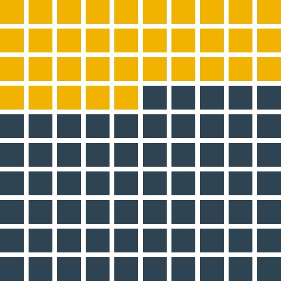
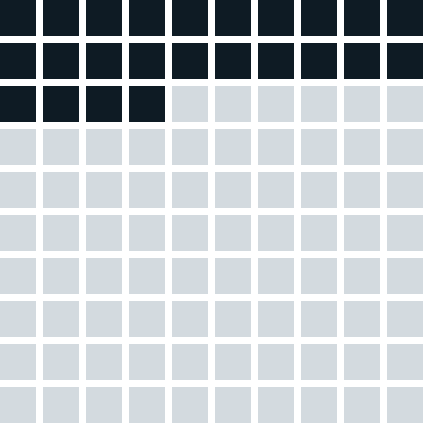
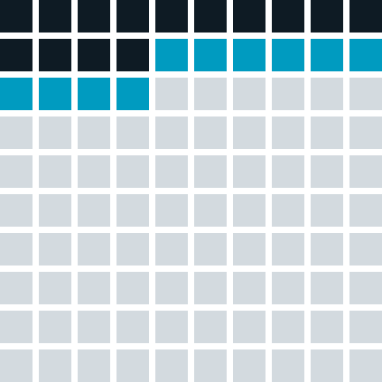
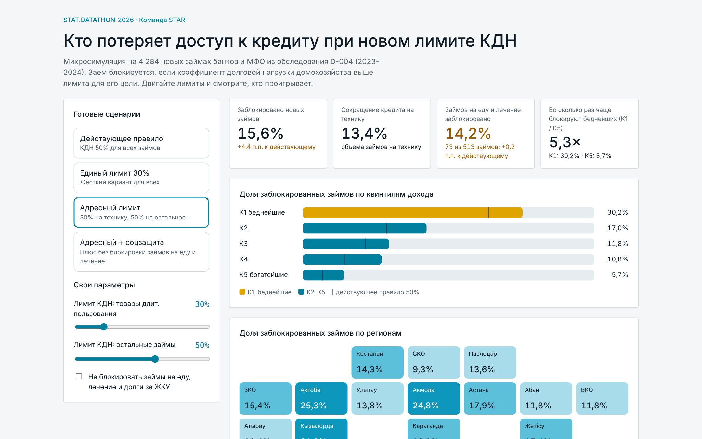

STAT.DATATHON-2026 · Data to Policy · Финал
Микросимуляция лимита долговой нагрузки на 4 284 новых займах из обследования домохозяйств D-004
Команда STAR
Джафарли Искендер Анар оглы
Руководитель команды. Университет АДА, Школа информационных технологий и инженерии (SITE), Баку, Азербайджан
Садыгова Назпери Агали гызы
Московский государственный университет имени М. В. Ломоносова, Факультет менеджмента, Баку, Азербайджан
Иманов Юнус Фариз оглы
Хельсинкский университет, Департамент математики и статистики, Хельсинки, Финляндия
1. f1
Одна семья из данных
Доход семьи в месяц
205 000 тенге
80 000
уже уходит на долги. Нагрузка 39%
Нужен заем 210 000 тенге на продукты
Лимит 50%: одобрено
Лимит 30%: отказ
Медианные значения по таким семьям в D-004, 2023-2024: беднейшие 20%, заем на еду или лечение, нагрузка 30-50%
2 / 9
2. f2
50%
максимум платежей по долгам от дохода (КДН). Действует сейчас
8×
максимум общего долга к годовому доходу (КДД) с 1 января 2027
Наш вопрос
Если снизить лимит КДН с 50% до 30%, кто потеряет доступ к кредиту и куда пойдет?
МВФ, 2025: неадресные меры выталкивают кредитование из банков
Команда STAR · STAT.DATATHON-2026
3 / 9
3. f3
12 000
домохозяйств за 8 кварталов обследования D-004, всего 96 000 наблюдений
КДН
для каждой семьи: платежи по займам, деленные на доход за квартал
4 284
новых займа банков и МФО. Если КДН выше лимита, заем блокируется
Синтетические микроданные БНС: направления связей надежны, величины ориентировочные. Python, pandas, statsmodels; код открыт
Команда STAR · STAT.DATATHON-2026
4 / 9
4. f4
Доля платящих по займам с КДН выше 50%, по пятым частям населения по доходу
Беднейшие 20%
33%
Вторые
15%
Средние
12%
Четвертые
8%
Богатейшие 20%
4%
8×
разница между беднейшими и богатейшими
Команда STAR · STAT.DATATHON-2026 · D-004, 2023-2024
5 / 9
5. f5

35
получат отказ. У богатейших: каждый двенадцатый
Почти четверть займов на еду, лечение и ЖКУ тоже блокируется. Такие заемщики уже почти в 3 раза чаще берут у частных лиц и в ломбардах
D-004 2023-2024. Частники и ломбарды: 32% займов на базовые нужды против 12% на прочие
6 / 9
6. f6
КДН 30% только для займов на технику и мебель, 50% для всех остальных
Единый лимит 30%

24 из 100 займов на еду и лечение: отказ
Адресный лимит

14 из 100, как сегодня. 10 одобрены
Кредит на технику и мебель
−13,4%
в обоих вариантах: тот же эффект для регулятора
Семья из начала получает свой заем на продукты
Новые займы банков и МФО, D-004 2023-2024. Кредит на технику: доля объема, попадающая под лимит
7 / 9
7. f7
1
30% только для займов на товары длительного пользования
2
по регионам; пилот в Акмолинской и Актюбинской областях
3
без него лимит КДД 2027 года нельзя измерить по данным D-004

Наш симулятор: задайте лимит и сразу видно, кто проигрывает. Открыть
Дальше: локальная языковая модель на GH200 (CSC Roihu) переводит текст меры в параметры симулятора
Команда STAR · STAT.DATATHON-2026
8 / 9
8. f8
Тот же эффект для регулятора. Меньше отказов тем, кому нужны деньги на еду и лечение.
Команда STAR
Джафарли Искендер Анар оглы
Руководитель команды. Университет АДА, Школа информационных технологий и инженерии (SITE), Баку, Азербайджан
ijafarli14955@ada.edu.az
Садыгова Назпери Агали гызы
Московский государственный университет имени М. В. Ломоносова, Факультет менеджмента, Баку, Азербайджан
sadigova.nazpari@gmail.com
Иманов Юнус Фариз оглы
Хельсинкский университет, Департамент математики и статистики, Хельсинки, Финляндия
yunus.z.imanov@helsinki.fi
9. f9